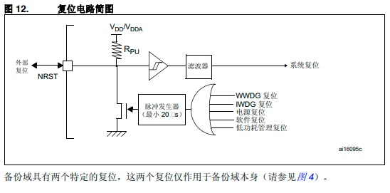
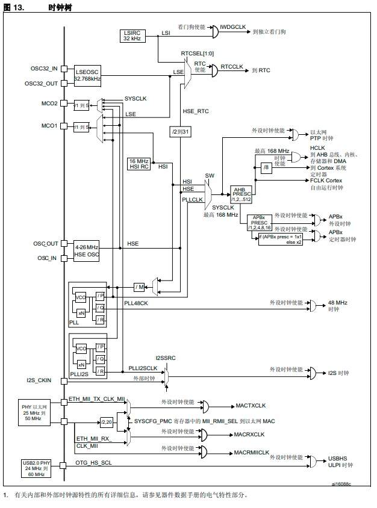
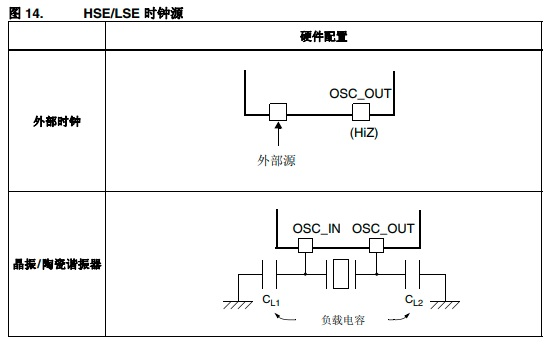
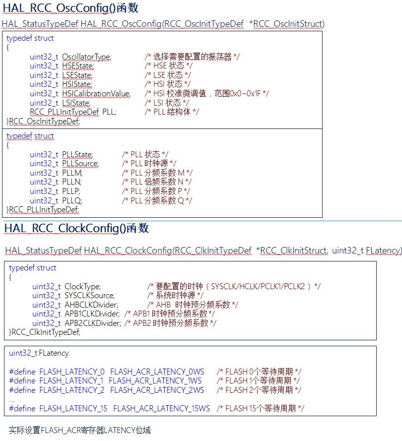

系统复位
共有三种类型的复位，分别为系统复位、电源复位和备份域复位:
● 系统复位
除了时钟控制寄存器 CSR 中的复位标志和备份域中的寄存器外，系统复位会将其它全部寄存器都复位为复位值（请参见图 4）。只要发生以下事件之一，就会产生系统复位：
— NRST 引脚低电平（外部复位）
— 窗口看门狗计数结束（WWDG 复位）
— 独立看门狗计数结束（IWDG 复位）
— 软件复位（SW 复位）（请参见软件复位）
— 低功耗管理复位（请参见低功耗管理复位）
软件复位
可通过查看 RCC 时钟控制和状态寄存器（RCC_CSR）中的复位标志确定。
要对器件进行软件复位，必须将 Cortex™-M4F 应用中断和复位控制寄存器中的 SYSRESETREQ 位置 1。有关详细信息，请参见 Cortex™-M4F 技术参考手册。
低功耗管理复位
引发低功耗管理复位的方式有两种：
— 进入待机模式时产生复位：此复位的使能方式是清零用户选项字节中的 nRST_STDBY 位。使能后，只要成功执行进入待机模式序列，器件就将复位，而非进入待机模式。
— 进入停止模式时产生复位：此复位的使能方式是清零用户选项字节中的 nRST_STOP 位。使能后，只要成功执行进入停止模式序列，器件就将复位，而非进入停止模式。
有关用户选项字节的详细信息，请参见 STM32F40x 和 STM32F41x Flash 编程手册，该手册可从 ST 销售办事处获取，也可以从 ST 网站 www.st.com 获得文档信息。
● 电源复位
只要发生以下事件之一，就会产生电源复位：
— 上电/掉电复位（POR/PDR 复位）或欠压（BOR）复位
— 在退出待机模式时
除备份域内的寄存器以外，电源复位会将其它全部寄存器设置为复位值（请参见图 4）。
这些源均作用于 NRST 引脚，该引脚在复位过程中始终保持低电平。RESET 复位入口向量在存储器映射中固定在地址 0x0000_0004。
芯片内部的复位信号会在 NRST 引脚上输出。脉冲发生器用于保证最短复位脉冲持续时间，可确保每个内部复位源的复位脉冲都至少持续 20 μs。对于外部复位，在 NRST 引脚处于低电平时产生复位脉冲。

● 备份域复位
备份域复位会将所有 RTC 寄存器和 RCC_BDCR 寄存器复位为各自的复位值。BKPSRAM 不受此复位影响。BKPSRAM 的唯一复位方式是通过 Flash 接口将 Flash 保护等级从 1 切换到 0。只要发生以下事件之一，就会产生备份域复位：
— 软件复位，通过将 RCC 备份域控制寄存器（RCC_BDCR）中的 BDRST 位置 1 触发。
— 在电源 VDD 和 VBAT 都已掉电后，其中任何一个又再上电。
系统时钟
可以使用三种不同的时钟源来驱动系统时钟（SYSCLK）：
— HSI 振荡器时钟
— HSE 振荡器时钟
— 主 PLL（PLL）时钟
器件具有以下两个次级时钟源：
— 32 kHz 低速内部 RC（LSI RC），该 RC 用于驱动独立看门狗，也可选择提供给 RTC 用于停机/待机模式下的自动唤醒。
— 32.768 kHz 低速外部晶振（LSE 晶振），用于驱动 RTC 时钟（RTCCLK）。
对于每个时钟源来说，在未使用时都可单独打开或者关闭，以降低功耗。

时钟控制器为应用带来了高度的灵活性，用户在运行内核和外设时可选择使用外部晶振或者使用振荡器，既可采用最高的频率，也可为以太网、USB OTG FS 以及 HS、I2S 和 SDIO 等需要特定时钟的外设保证合适的频率。
可通过多个预分频器配置 AHB 频率、高速 APB（APB2）和低速 APB（APB1）。AHB 域的最大频率为 168 MHz。高速 APB2 域的最大允许频率为 84 MHz。低速 APB1 域的最大允许频率为 42 MHz。
除以下时钟外，所有外设时钟均由系统时钟（SYSCLK）提供：
— 来自于特定 PLL 输出（PLL48CLK）的 USB OTG FS 时钟（48 MHz）、基于模拟技术的随机数发生器（RNG）时钟（≤48 MHz）和 SDIO 时钟（≤48 MHz）。
— I2S 时钟：要实现高品质的音频性能，可通过特定的 PLL（PLLI2S）或映射到 I2S_CKIN 引脚的外部时钟提供 I2S 时钟。有关 I2S 时钟频率和精度的详细信息，请参见第 27.4.4 节：时钟发生器。
— 由外部 PHY 提供的 USB OTG HS（60 MHz）时钟。
— 由外部 PHY 提供的以太网 MAC 时钟（TX、RX 和 RMII）。有关以太网配置的更多信息，请参见以太网外设说明中的第 29.4.4 节：MII/RMII 选择。当使用以太网时，AHB 时钟频率至少应为 25 MHz。
RCC 向 Cortex 系统定时器（SysTick）馈送 8 分频的 AHB 时钟（HCLK）。SysTick 可使用此时钟作为时钟源，也可使用 HCLK 作为时钟源，具体可在 SysTick 控制和状态寄存器中配置。
STM32F42xxx的定时器时钟频率由硬件自动设置。根据 RCC_CFGR 寄存器中 TIMPRE 位的取值，共分为两种情况：
— 如果 RCC_DKCFGR 寄存器的 TIMPRE 位清 0：如果 APB 预分频器分频系数是 1，则定时器时钟频率（TIMxCLK）为 PCLKx。否则，定时器时钟频率将为 APB 域的频率的两倍：TIMxCLK = 2xPCLKx。
— 如果 RCC_DKCFGR 寄存器的 TIMPRE 位置 1：如果 APB 预分频器配置分频系数是 1、2 或 4，则定时器时钟频率（TIMxCLK）将设置为 HCLK。否则，定时器时钟频率将为 APB 域的频率的四倍：TIMxCLK = 4xPCLKx。
FCLK 充当 Cortex™-M4F 的自由运行时钟。有关详细信息，请参见 Cortex™-M4F 技术参考手册。
● HSE时钟
高速外部时钟信号(HSE)有 2 个时钟源：
— HSE 外部晶振/陶瓷谐振器
— HSE 外部用户时钟
谐振器和负载电容必须尽可能地靠近振荡器的引脚，以尽量减小输出失真和起振稳定时间。负载电容值必须根据所选振荡器的不同做适当调整。

外部源（HSE 旁路）
在此模式下，必须提供外部时钟源。此模式通过将 RCC 时钟控制寄存器（RCC_CR）中的 HSEBYP 和 HSEON 位置 1 进行选择。必须使用占空比约为 50% 的外部时钟信号（方波、正弦波或三角波）来驱动 OSC_IN 引脚，同时 OSC_OUT 引脚应保持为高阻态（hi-Z）。请参见图 14。
外部晶振/陶瓷谐振器（HSE 晶振）
HSE 的特点是精度非常高。相关的硬件配置如图 14 所示。有关详细信息，请参见数据手册的电气特性部分。
RCC 时钟控制寄存器（RCC_CR）中的 HSERDY 标志指示高速外部振荡器是否稳定。在启动时，硬件将此位置 1 后，此时钟才可以使用。如在 RCC 时钟中断寄存器（RCC_CIR）中使能中断，则可产生中断。
HSE 晶振可通过 RCC 时钟控制寄存器（RCC_CR）中的 HSEON 位打开或关闭。
● HSI时钟
HSI 时钟信号由内部 16 MHz RC 振荡器生成，可直接用作系统时钟，或者用作 PLL 输入。
HSI RC 振荡器的优点是成本较低（无需使用外部组件）。此外，其启动速度也要比 HSE 晶振快，但即使校准后，其精度也不及外部晶振或陶瓷谐振器。
校准
因为生产工艺不同，不同芯片的 RC 振荡器频率也不同，因此 ST 会对每个器件进行出厂校准，达到 TA= 25 °C 时 1% 的精度。
复位后，工厂校准值将加载到 RCC 时钟控制寄存器（RCC_CR）的 HSICAL[7:0] 位中。
如果应用受到电压或温度变化影响，则这可能也会影响到 RC 振荡器的速度。用户可通过 RCC 时钟控制寄存器（RCC_CR）中的 HSITRIM[4:0] 位对 HSI 频率进行微调。
RCC 时钟控制寄存器（RCC_CR）中的 HSIRDY 标志指示 HSI RC 是否稳定。在启动时，硬件将此位置 1 后，HSI 才可以使用。
HSI RC 可通过 RCC 时钟控制寄存器（RCC_CR）中的 HSION 位打开或关闭。
HSI 信号还可作为备份时钟源（辅助时钟）使用，以防 HSE 晶振发生故障。
● PLL配置
STM32F4xx 器件具有两个 PLL：
— 主 PLL (PLL) 由 HSE 或 HSI 振荡器提供时钟信号，并具有两个不同的输出时钟：
第一个输出用于生成高速系统时钟（最高达 168 MHz）
第二个输出用于生成 USB OTG FS 的时钟 (48 MHz)、随机数发生器的时钟 (≤48 MHz) 和 SDIO 时钟 (≤48 MHz)。
— 专用 PLL (PLLI2S) 用于生成精确时钟，从而在 I2S 接口实现高品质音频性能。
由于在 PLL 使能后主 PLL 配置参数便不可更改，所以建议先对 PLL 进行配置，然后再使能（选择 HSI 或 HSE 振荡器作为 PLL 时钟源，并配置分频系数 M、N、P 和 Q）。
PLLI2S 使用与 PLL 相同的输入时钟（PLLM[5:0] 和 PLLSRC 位为两个 PLL 所共用）。但是，PLLI2S 具有专门的使能/禁止和分频系数（N 和 R）配置位。在 PLLI2S 使能后，配置参数便不能更改。
当进入停机和待机模式后，两个 PLL 将由硬件禁止；如将 HSE 或 PLL（由 HSE 提供时钟信号）用作系统时钟，则在 HSE 发生故障时，两个 PLL 也将由硬件禁止。RCC PLL 配置寄存器 (RCC_PLLCFGR) 和 RCC 时钟配置寄存器 (RCC_CFGR) 可分别用于配置 PLL 和 PLLI2S。
● LSE时钟
LSE 晶振是 32.768 kHz 低速外部 (LSE) 晶振或陶瓷谐振器，可作为实时时钟外设 (RTC) 的时钟源来提供时钟/日历或其它定时功能，具有功耗低且精度高的优点。
LSE 晶振通过 RCC 备份域控制寄存器 (RCC_BDCR) 中的 LSEON 位打开和关闭。
RCC 备份域控制寄存器 (RCC_BDCR) 中的 LSERDY 标志指示 LSE 晶振是否稳定。在启动时，硬件将此位置 1 后，LSE 晶振输出时钟信号才可以使用。如在 RCC 时钟中断寄存器 (RCC_CIR) 中使能中断，则可产生中断。
外部源（LSE 旁路）
在此模式下，必须提供外部时钟源，最高频率不超过 1 MHz。此模式通过将 RCC 备份域控制寄存器 (RCC_BDCR) 中的 LSEBYP 和 LSEON 位置 1 进行选择。必须使用占空比约为 50% 的外部时钟信号（方波、正弦波或三角波）来驱动 OSC32_IN 引脚，同时 OSC32_OUT 引脚应保持为高阻态 (Hi-Z)。请参见图 14。
● LSI时钟
LSI RC 可作为低功耗时钟源在停机和待机模式下保持运行，供独立看门狗 (IWDG) 和自动唤醒单元 (AWU) 使用。时钟频率在 32 kHz 左右。有关详细信息，请参见数据手册的电气特性部分。
LSI RC 可通过 RCC 时钟控制和状态寄存器 (RCC_CSR) 中的 LSION 位打开或关闭。
RCC 时钟控制和状态寄存器 (RCC_CSR) 中的 LSIRDY 标志指示低速内部振荡器是否稳定。在启动时，硬件将此位置 1 后，此时钟才可以使用。如在 RCC 时钟中断寄存器 (RCC_CIR) 中使能中断，则可产生中断。
● 系统时钟 (SYSCLK) 选择
在系统复位后，默认系统时钟为 HSI。在直接使用 HSI 或者通过 PLL 使用时钟源来作为系统时钟时，该时钟源无法停止。
只有在目标时钟源已就绪时（时钟在启动延迟或 PLL 锁相后稳定时），才可从一个时钟源切换到另一个。如果选择尚未就绪的时钟源，则切换在该时钟源就绪时才会进行。RCC 时钟控制寄存器 (RCC_CR) 中的状态位指示哪个（些）时钟已就绪，以及当前哪个时钟正充当系统时钟。
● 时钟安全系统 (CSS)
时钟安全系统可通过软件激活。激活后，时钟监测器将在 HSE 振荡器启动延迟后使能，并在此振荡器停止时被关闭。
如果 HSE 时钟发生故障，此振荡器将自动禁止，一个时钟故障事件将发送到高级控制定时器 TIM1 和 TIM8 的断路输入，并且同时还将生成一个中断来向软件通知此故障（时钟安全系统中断，CSSI），以使 MCU 能够执行救援操作。CSSI 与 Cortex™-M4F NMI（不可屏蔽中断）异常向量相链接。
注意：当 CSS 使能后，如果 HSE 时钟偶发故障，则 CSS 将生成一个中断，进而促使 NMI 自动生成。NMI 将无限期执行，除非将 CSS 中断挂起位清零。因此，应用程序必须在 NMI ISR 中将 CSS 中断清零，具体方式为在时钟中断寄存器 (RCC_CIR) 中将 CSSC 位置 1。
如果直接或间接使用 HSE 振荡器作为系统时钟（间接是指该振荡器直接用作 PLL 的输入时钟，并且该 PLL 时钟为系统时钟）并且检出故障，则系统时钟将切换到 HSI 振荡器并且 HSE 振荡器将被禁止。
如果 HSE 振荡器时钟是充当系统时钟的 PLL 的时钟源，则在发生故障时，PLL 也会被禁止。在此情况下，如果 PLLI2S 已使能，则在 HSE 发生故障时也会将其禁止。
● RTC/AWU 时钟
一旦选定 RTCCLK 时钟源后，要想修改所做选择，只能复位电源域。
RTCCLK 时钟源可以是 HSE 1 MHz（HSE 由一个可编程的预分频器分频）、LSE 或者 LSI 时钟。选择方式是编程 RCC 备份域控制寄存器 (RCC_BDCR) 中的 RTCSEL[1:0] 位和 RCC 时钟配置寄存器 (RCC_CFGR) 中的 RTCPRE[4:0] 位。所做的选择只能通过复位备份域的方式修改。
如果选择 LSE 作为 RTC 时钟，则系统电源丢失时 RTC 仍将正常工作。如果选择 LSI 作为 AWU 时钟，则在系统电源丢失时将无法保证 AWU 的状态。如果 HSE 振荡器通过一个介于 2 和 31 之间的值进行分频，则在备用或系统电源丢失时将无法保证 RTC 的状态。
LSE 时钟位于备份域中，而 HSE 和 LSI 时钟则不是。因此：
— 如果选择 LSE 作为 RTC 时钟：
只要 VBAT 电源保持工作，即使 VDD 电源关闭，RTC 仍可继续工作。
— 如果选择 LSI 作为自动唤醒单元 (AWU) 时钟：
在 VDD 电源掉电时，AWU 的状态将不能保证。有关 LSI 校准的详细信息，
— 如果使用 HSE 时钟作为 RTC 时钟：
如果 VDD 电源掉电或者内部调压器关闭（切断 1.2 V 域的供电），则 RTC 的状态将不能保证。
● 看门狗时钟
如果独立看门狗 (IWDG) 已通过硬件选项字节或软件设置的方式启动，则 LSI 振荡器将强制打开且不可禁止。在 LSI 振荡器稳定后，时钟将提供给 IWDG。
● 时钟输出功能
共有两个微控制器时钟输出 (MCO) 引脚：
MCO1
用户可通过可配置的预分配器（从 1 到 5）向 MCO1 引脚 (PA8) 输出四个不同的时钟源：
— HSI 时钟
— LSE 时钟
— HSE 时钟
— PLL 时钟
所需的时钟源通过 RCC 时钟配置寄存器 (RCC_CFGR) 中的 MCO1PRE[2:0] 和 MCO1[1:0] 位选择。
MCO2
用户可通过可配置的预分配器（从 1 到 5）向 MCO2 引脚 (PC9) 输出四个不同的时钟源：
— HSE 时钟
— PLL 时钟
— 系统时钟 (SYSCLK)
— PLLI2S 时钟
所需的时钟源通过 RCC 时钟配置寄存器 (RCC_CFGR) 中的 MCO2PRE[2:0] 和 MCO2 位选择。
对于不同的 MCO 引脚，必须将相应的 GPIO 端口在复用功能模式下进行设置。
MCO 输出时钟不得超过 100 MHz（最大 I/O 速度）。
示例
2.1 系统时钟配置步骤
1) 配置 HSE_VALUE：告诉 HAL 库外部晶振频率，stm32xxxx_hal_conf.h
2) 调用 SystemInit() 函数（可选）：在启动文件中调用，在 system_stm32xxxx.c 定义
3) 选择时钟源，配置 PLL：通过 HAL_RCC_OscConfig() 函数设置
4) 选择系统时钟源，配置总线分频器：通过 HAL_RCC_ClockConfig() 函数设置
3 + 4= sys_stm32_clock_init()
2.2 外设时钟使能和失能
我们要使用某个外设，必需先使能该外设时钟！！！
HAL 库使能某个外设时钟的方法，如：
__HAL_RCC_GPIOA_CLK_ENABLE(); /* 使能 GPIOA 时钟 */
HAL 库禁止某个外设时钟的方法，如：
__HAL_RCC_GPIOA_CLK_DISABLE(); /* 禁止 GPIOA 时钟 */
2.3 sys_stm32_clock_init 函数 (F4)
1. HAL_RCC_OscConfig() 函数
2. HAL_RCC_ClockConfig() 函数
